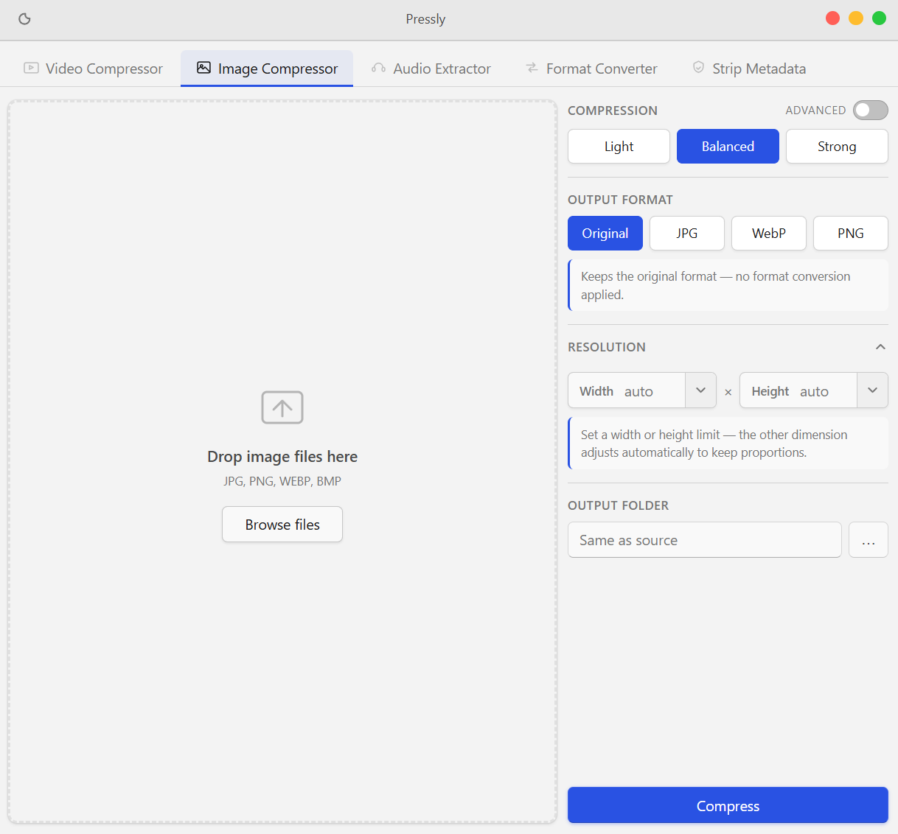

A simple desktop tool for video and image compression, format conversion and metadata removal.
Download for free macOS & Windows · Free · No account
Compress MP4, MOV, MKV and more with adjustable quality and resolution.
Reduce JPG, PNG, WEBP file sizes without losing visible quality.
Pull audio from any video as MP3, AAC, WAV or FLAC.
Convert between video, image and audio formats in one click.
Remove GPS, timestamps and camera info from your files before sharing.